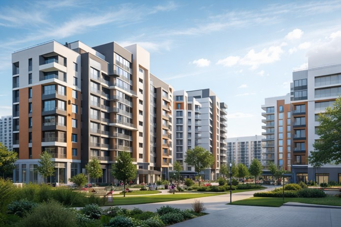

1–2-комнатные квартиры
Основной массовый формат: чаще всего именно эти объекты формируют базу для выбора первой квартиры, жилья для пары или небольшой семьи.
Подбор квартир в Аксае, Ростове-на-Дону и Ростовской области.

В Аксае сейчас 6 квартир в реестре. Наличие проверим при обращении. Квартиры в Аксае
Показываем объекты с известной географией. Уточним наличие и условия просмотра при обращении.
Квартиры в Аксае: посмотреть отдельную подборку
Откройте страницу объекта, чтобы посмотреть характеристики и связаться с нами.
На вторичном рынке Аксая одновременно представлены компактные квартиры, семейные форматы и свежая вторичка в сданных жилых комплексах. Выбирать стоит не только по площади и цене: важны конкретная улица, состояние дома, ежедневный маршрут и юридическая чистота объекта.
Отдельно выделяется свежая вторичка в уже сданных домах: покупатель получает более современную среду без ожидания завершения строительства.
Основной массовый формат: чаще всего именно эти объекты формируют базу для выбора первой квартиры, жилья для пары или небольшой семьи.
Семейный сегмент с устойчивым спросом и более ограниченным предложением по сравнению с компактными форматами.
Компактный формат для первого жилья или аренды, который встречается на вторичке, но не доминирует в структуре предложения.
Квартиры в сданных ЖК и относительно новых домах для тех, кто хочет современный фонд без ожидания стройки.
Центральная городская ось с высокой концентрацией сервисов и повседневной инфраструктуры.
Подходит для: семьи, первой квартиры и тех, кому важна ликвидность.
Проверить: парковку, трафик и фактический шум у конкретного дома.
Смешанный фонд и типовые семейные метражи с разным годом постройки и неоднородным состоянием дворов.
Подходит для: семей с детьми, покупателей под аренду и стартового бюджета.
Проверить: дом, подъезд и двор по каждому адресу отдельно.
Сегмент свежей вторички с современными планировками и средой, близкой к новому фонду.
Подходит для: тех, кто хочет новый дом без ожидания стройки.
Проверить: транспортный сценарий и ежедневную логистику.

Садовая, Ленина, Чапаева, Коминтерна.
Гулаева, Вартанова и компактные форматы.
Ленина, Садовая, Платова и свежая вторичка.
Речников, Строителей и сданные ЖК.
Даёт широкий выбор по адресам и позволяет увидеть фактическое состояние дома, двора и окружения.
Подходит тем, кому важны быстрый переезд и понятный жилой контур.
Привлекает возрастом дома, современными планировками и инженерными решениями.
Сданный ЖК может стать компромиссом между новым качеством среды и отсутствием ожидания стройки.
Перед подбором удобно заранее рассчитать ориентировочный платеж и понять комфортный диапазон бюджета. Решение банка зависит от покупателя, объекта, первоначального взноса, дохода и действующих правил банка.
Материнский капитал требует корректного оформления документов и учета долей. По новостройкам, сданным ЖК и семейной ипотеке условия нужно проверять на момент сделки: программы меняются, а применимость зависит от конкретного объекта.
Сначала определите бюджет, источник оплаты, желаемый срок переезда и обязательные требования к району. После этого можно сравнивать вторичку, сданные дома и новостройки без лишних просмотров.
Вторичка удобна, если нужно быстрее заехать и увидеть фактическое состояние дома. Новостройка может подойти тем, кто готов сравнивать планировки, ремонт, условия оплаты и ипотечные программы.
Да, но возможность ипотеки зависит от банка, покупателя и конкретного объекта. Перед авансом стоит проверить, подходит ли квартира под требования выбранного банка.
Материнский капитал можно рассматривать как часть оплаты, если объект и сделка соответствуют требованиям. Важно заранее проверить порядок оформления и будущего выделения долей.
Нужно проверить документы, собственников, ЕГРН, обременения, условия возврата денег и сроки выхода на сделку. Аванс или задаток лучше оформлять только после понимания юридической картины.
ЕГРН показывает зарегистрированные права и ограничения по объекту. Это базовая проверка перед переговорами, авансом и подготовкой договора.
Смотрите не только адрес, но и ежедневный маршрут: школа, садик, магазины, парковка, остановки и выезд в Ростов-на-Дону. Лучше оценивать район в то время суток, когда вы обычно будете им пользоваться.
Да, в Аксае часто ищут жилье с удобным выездом к Ростову-на-Дону. Важно сравнить не расстояние на карте, а реальное время дороги и привычный транспортный сценарий.
Если вы выбираете квартиру в Аксае, оставьте заявку: специалист Домиан Квартал уточнит задачу, бюджет, желаемый район и подберет подходящие варианты из актуальной базы.
Оставить заявкуЕсли вместо квартиры рассматриваете дом с участком в Аксае или рядом.
Перейти в раздел домовЕсли планируете строить дом и хотите сравнить земельные предложения.
Перейти в раздел участковЕсли хотите сравнить вторичку с первичным рынком и сданными ЖК.
Перейти в раздел новостроекПамятка для тех, кто хочет спокойно пройти проверку ЕГРН, собственников и условий сделки.
Открыть материалКороткое сравнение форматов, сроков въезда, рисков и ипотечных сценариев.
Сравнить форматы